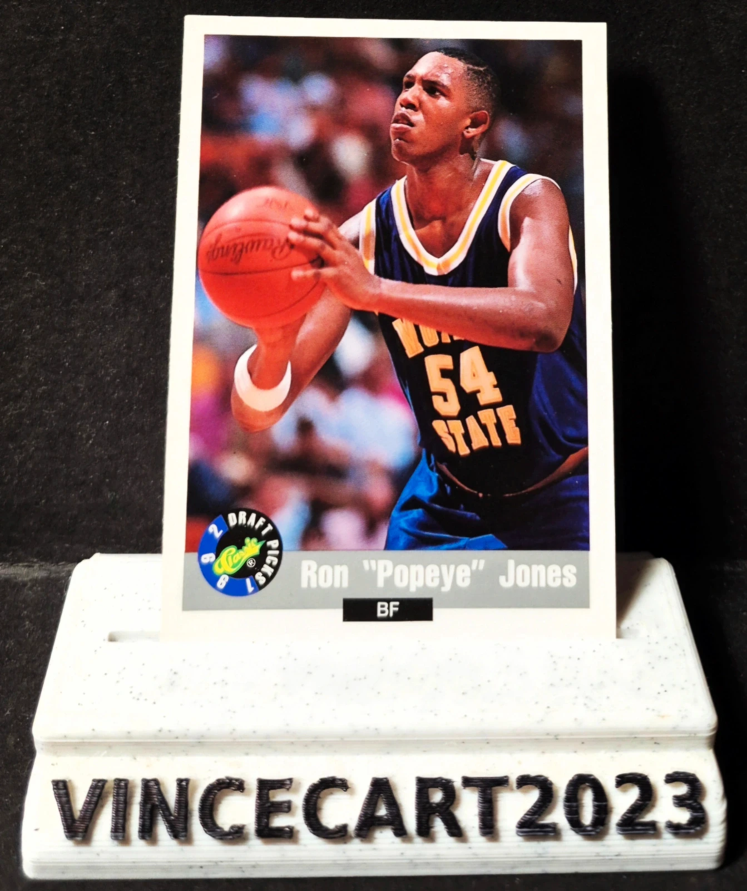

🏀🔥 Carte NBA Draft Picks Ron "Popeye" Jones #50 – 1992 Draft Picks – Vintage
1,80 €
Je vends cette carte vintage de Ron "Popeye" Jones, ailier fort sélectionné lors de la Draft NBA 1992. 📌 Joueur : Ron "Popeye" Jones 📌 Numéro : #50 📌 Collection : 1992 Draft Picks 📌 Position : Power Forward (BF) 📌 Année : 1992 📌 État : Très bon état (voir photos) ✨ Carte rookie/draft issue de la promotion NBA 1992. ✨ Joueur connu pour son impact au rebond et son intensité défensive. ✨ Carte idéale pour les collectionneurs de rookies NBA des années 90. ✨ Parfaite pour compléter une collection Draft Picks ou basket vintage. 📦 Envoi soigné sous sleeve